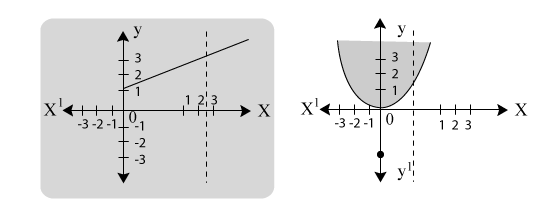
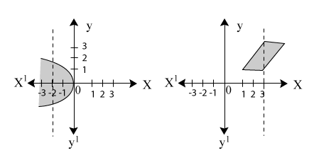
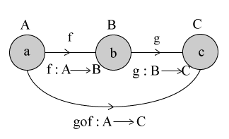
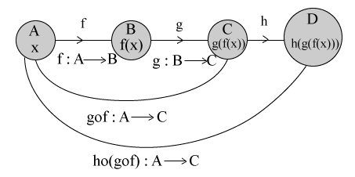
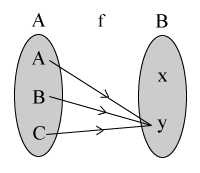
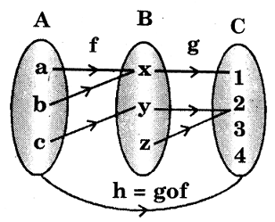

Function
defnition :
Let A and B be two non empty sets, then a function 'f' from set A to set B is a rule or method or correspondence which associates elements of set A to set B such that
all elements of set A are associated to elements in set B.
an element of set A is associated to a unique element in set B.
Terms such as "map" or "mapping" or "correspondence" are used as synonyms for "function".
If 'f' is a function from a set A to set B then we write \( f : A \rightarrow B \ (or) \ A \xrightarrow{f} B \) , which is read 'f' is a function from A to B or 'f' maps A to B.
Note :
It is clear from the definition that every function 'f' is a relation as \( f \subseteq A \times B \) . But every relation is not a function.
Ex: A = {1, 2, 3}, B = {2, 4, 3} then
R = {(1, 2), (1, 4), (2, 3)} is a relation as \( R \subseteq A \times B \) but not a function since for \( 3 \epsilon A \) has no corresponding element in B.
Diagramatic Representation of a Function
Ex: If A = {1, 2, 3} B = {4, 5, 6}
Here \( f : A \rightarrow B \) is a function.
f can be written as, f = {(1, 4), (2, 6),(3, 5)}
Ex: If A = (a, b, c} B = {4, 5, 6}
f = {(a, 5), (a, 6), (c, 4)}
Here \( f : A \rightarrow B \) is not a function.
Because \( b \epsilon A \) has no corresponding element in B and 'a' has two corresponding element 5 and 6.
Image
If f is a function from A to B and an element \( a \epsilon A \) is associated to be \( b \epsilon B \) under f. i.e., f(a) = b, then 'b' is called the f image of 'a' (or)
If \( f : A \rightarrow B \) is a mapping and (a, b) \( \epsilon \) f then we write this assignment as f(a) = b. Also f(a) is called the image of 'a' under f.
Ex: If A = {a, b, c}; B = {c, d, e}
Here \( f : A \rightarrow B \) is a function
f = {(a, e), (b, d), (c, c)}
Here f(a) = e, f(b) = d
and f(c) = c
So e, d and c are images of a, b and c under f respectively.
Pre Image or Inverse Image
\( f: A \rightarrow B \) is a mapping and (a, b) \( \epsilon \) f and we write this assignment as \( f^{-1}(b) = a \) . Also \( f^{-1}(b) \) is called pre image (or) inverse image of 'b' under 'f'.
Ex: A = {1, 2, 3}; B = {7, 8, 9}
Here \( f: A \rightarrow B \) is a function and f = {(1, 9), (2, 7), (3, 8)}
\( f^{-1} (9) = 1; \ f^{-1} (7) = 2; \ f^{-1} (8) = 3 \)
\( \therefore \) 1, 2 and 3 are called the inverse images of 9, 7 and 8 respectively.
Domain and Co-domain
\( Let f: A \rightarrow B \) is a function, then set A is called the Domain of f, and set B is called the Co-Domain of f.
Ex: Let A = {-2, -1, 0, 1, 2} and B = {0, 1, 2, 3, 4, 5, 6}
The function \( f: A \rightarrow B \) is defined as,
Domain of function f = {-2, -1, 0, 1, 2}
Co-Domain of f = {0, 1, 2, 3, 4, 5, 6}
Range of a Function
The set of all f - images of elements of A is known as the range of f (or) image set of A under f and is denoted by f(A).
Thus f(A) = {f(x); x \( \epsilon \) A} = Range of f.
Note:
\( f(A) \subseteq B \)
Ex: Let A = {-2, -1, 0, 1, 2} and B = {0, 1, 2, 3, 4, 5, 6}
Consider a rule \( f(x) = x^2 \) then
\( \begin{align} f(-2) = (-2)^2 = 4 \\\\[3pt]
f(-1) = (-1)^2 = 1 \\\\[3pt]
f(0) = (0)^2 = 0 \\\\[3pt]
f(1) = (1)^2 = 1 \\\\[3pt]
f(2) = (2)^2 = 4 \end{align} \)
Clearly \( f: A \rightarrow B \) given by \( f(x) = x^2 \) is a function.
Domain of f = A = {-2, -1, 0, 1, 2} and Range of f = {0, 1, 4}
Ex: consider a rule f(x) = 2x - 3 associating elements of N(set of Natural Numbers) to elements of N. This rule does not define a function from N to itself because
\( f(1) = 2 \times 1 - 3 = -1 \notni N \)
i.e. \( 1 \epsilon N \) is not associated to any element of N
Description of a Function
Let \( f: A \rightarrow B \) be a function such that its Domain 'A' consists of a finite number of elements then f(x) be described by listing the values which it attains at different points of its Domain.
Ex: A = {-1, 1, 2, 3} and B is the set of real numbers, then a function \( f: A \rightarrow B \) can be described as f(-1) = 3; f(1) = 0; \( f(2) = \frac{3}{2} \) and f(3) = 0. In case, A is infinite set, then 'f' can not be described by listing the images at points in its domain. In such cases functions are generally described by a formula. For example \( f : Z \rightarrow Z \) given by \( f(x) = x^2 + 1 \ or \ f : R \rightarrow R \) by f(x) = 2x.
Various types of Functions
One - One Function (Injection)
A function \( f: A \rightarrow B \) is said to be a one - one function, if different elements of set A have different images in set B.
If \( x_1 = x_2 \Rightarrow f(x_1) = f(x_2) \forall x_1, \ x_2 \in A \)
Ex 1: Let \( f: A \rightarrow B \) is represented by the following diagram.
Clearly \( f: A \rightarrow B \) is one - one function since distinct elements in A has distinct images in set B.
Ex 2: Let \( g : X \rightarrow Y \) is represented by
From above diagram, we observe that \( g : X \rightarrow Y \) is not one - one because 2 and 3 in set A have same image under function g.
Ex:
\( f: R \rightarrow R \) given by \( f(x) = x^3 + 2 \) for all x \( \epsilon \) R.
Let x, y be two arbitrary elements of R (Domain of f)
Such that f(x) = f(y) \( \Rightarrow x^3 + 2 = y^3 + 2 \)
\( \begin{align} \Rightarrow X^3 = y^3 \\\\[3pt]
\Rightarrow x = y \end{align} \)
Hence 'f' is one - one function from R to itself.
Note:
If A and B are finite sets having 'm' and 'n' elements respectively, then number of one - one functions from A to B
\( \begin{align} = ^nP_m ; \ if \ n \geq m \\\\[3pt]
= 0 \ if \ n < m \end{align} \)
Onto Functions(Surjection)
A function \( f: A \rightarrow B \) is said to be an onto function if every element of B is the f-image of some element of A i.e., if f(A) = B or range of 'f' is the Co-Domain of f.
\( f: A \rightarrow B \ \ \ b \in B \Exists a \in A \ni f(a) = b \)
Ex: Let \( f: A \rightarrow B \) and \( g : X \rightarrow Y \) be two functions represented by the following diagrams.
clearly, e is an element in B which do not has pre-image in A.
So \( f: A \rightarrow B \) is not an onto function. Under function 'g' every element in Y has its pre image in X.
So \( g : X \rightarrow Y \) is an onto function.
Ex:
\( f : R \rightarrow R \) given by \( f(x) = x^3 + 2 \) for all x \( \epsilon \) R.
Let 'y' be an arbitary element of R. (Co-domain)
Then f(x) = y
\( \begin{align} \Rightarrow x^3 + 2 = y \\\\[3pt]
\Rightarrow x = (y - 2)^{\frac{1}{3}} \end{align} \)
Clearly for all y \( \epsilon R, \ (y - 2)^{ \frac{1}{3}} \) is a real number.
Thus, for all y \( \epsilon \) R (co-domain) there exist \( x = (y - 2)^{\frac{1}{3}} \) in R(domain).
Hence \( f : R \rightarrow R \) is an onto function.
Note:
-
If A and B are two sets having 'n' and 'm' elements respectively such that \( 1 \leq n \leq m \) , then number of onto functions from A to B is \( \sum \limits_{r = 1}^n (-1)^{n - r} . ^nC_r . r^m \) (B contained more than 2 elements)
-
If A and B are two sets having 'n' elements and '2' elements respectively. Then number of onto functions from A to B is \( 2^n - 2 \) .
Bijection or (one - one Onto function)
A function \( f : A \rightarrow B \) is a bijection if it is one - one as well as onto function.
Ex: Let \( f : A \rightarrow B \) be a function represented by the following diagram.
clearly, f is a bijection since it is both injective as well as suijective.
Note:
If A and B are finite sets and \( f : A \rightarrow B \) is a bijection, then A and B have the same number of elements. If A has 'n' elements then the number of bijections from A to B is n!.
Many - One Function
A function \( f : A \rightarrow B \) is said to be a many - one function if two or more elements of set A have the same image in B.
Ex:1 Let \( f : A \rightarrow B \) represented by the following diagram
Clearly \( x_2, \ x_4 \) in A have the same f image in B i.e., \( y_1 \) and also \( x_1, \ x_5 \) in A have the same f image in B i.e. \( y_3 \) .
Ex:2 Let A = {-1, 1, -2, 2} and B = {1, 4, 9, 16). Consider \( f : A \rightarrow B \) given by \( f(x) = x^2 \) then f(-1) = 1; f(1) = 1 ; f(-2) = 4 ; f(2) = 4.
Clearly, 1 and -1 have the same image. Similarly 2 and -2 also have the same image. So f is a many-one function.
Into Function
A function \( f : A \rightarrow B \) is an into function, if there exist an element in B having no pre image in A.
In other words, \( f : A \rightarrow B \) is an into function if it is not an onto function.
Ex: Let \( f : A \rightarrow B \) and \( g : X \rightarrow Y \) be two functions represented by the following diagrams.
Clearly, \( b_1 \) and \( b_5 \) are two elements in B which do not have their pre-image in A so \( f : A \rightarrow B \) is an into function.
Under function 'g' every element in Y has its pre image in X, so \( g : X \rightarrow Y \) is not an into function.
Identity Function
Let 'A' be a non empty set. A function \( f : A \rightarrow A \) is said to be an Identity function on set A, if f associates every element of set A to the element itself.
Thus \( f : A \rightarrow A \) is an identity function if f(x) = x for all \( x \epsilon A \) .
Ex: Let A = {a, b, c}
\( f : A \rightarrow A \) is represented by
Thus \( f(x) = x \ \forall x \epsilon A \)
Hence f is an identity function.
Note:
-
The identity function on set A is generally denoted by \( I_A \) .
-
It is true from the definition that \( I_A \) is a bijection on A.
Constant Function
A function \( f : A \rightarrow B \) is such that every element of A has same f image in B i.e., \( f(x) = x \forall x \epsilon A \) and 'c' is a fixed element of B. Then f is said to be a constant function.
Ex 1: If A = {1, 2, 4}; B = {5}
Here \( f : A \rightarrow B \) is a constant function.
Ex 2: If A = {4, 5, 6}; B = {7, 8, 9}
Here \( f : A \rightarrow B \) is also a constant function because f(4) = 8 : f(5) = 8 and f(6) = 8
Note:
-
A constant function is a function whose range is singleton set.
-
A constant function is one - one function if its domain contain singleton element.
-
A constant function is an onto function if its co-domain is a singleton set.
-
A constant function is a bijection, if both of its domain and co-domain are singleton sets.
Equal Functions
Two functions f and g are said to be equal if and only if
-
the domain of f = the domain of g
-
for each x \( \epsilon A \) , f(x) = g(x). Here 'A' is domain of f and g.
If two functions f and g are equal, then we write f = g.
Ex: Let A = {1, 2} B = {3, 6}
\( f : A \rightarrow B \) given by
\( f(x) = x^2 + 2 \) and \( g : A \rightarrow B \) given by g(x) = 3x
Then we observe that
f(1) = 3 = g(1) and f(2) = 6 = g(2)
Hence f and g have the same domain and co-domain.
Hence, f = g.
Inverse Functions
f is a function from A to B, in general \( f^{-1}(b) \) , may correspond with one element, more than one element or may not with any element.
Since it is clear from the definition.
\( f^{-1} : B \rightarrow A \) is a function if \( f : A \rightarrow B \) is one - one and onto function.
Ex.1: Let the function \( f : A \rightarrow B \) be defined by the following diagram.
Observe that f is not bijective.
\( f^{\prime}(q) = {a, c} \) , q is assigned to more than one element in A so \( f^{-1} \) is not a function.
Hence the inverse function of f does not exist.
Ex 2:
Let \( f : R \rightarrow R \) is defined by f(x) = 6x + 5 find \( f^{-1}(x) \) .
Sol:
Let f(x) = y
\( \Rightarrow \) 6x + 5 = y
\( \Rightarrow x = \frac{y - 5}{6} \)
\( f^{-1}(y) = \frac{y - 5}{6} \) for all \( y \epsilon R \) (co-domain)
Also observe that \( f^{-1} \) is one-one and onto.
Note:
-
Domain of f = Range of \( f^{-1} \) and Range of f = Domain of \( f^{-1} \)
-
The identity function is its own inverse.
Even and Odd Function
A function f(x) is said to be an even function if f(-x) = f(x) for all x;
A function f(x) is said to be an odd function if f(-x) = -f(x) for all x.
Ex. 1:
Let \( f(x) = 5x^6 + 6x^2 + 7 \)
Replacing 'x' by '- x'
\( f(-x) = 5(-x)^6 + 6(-x)^2 + 7 = 5x^6 + 6x^2 + 7 \)
\( \Rightarrow \) f(-x) = f(x)
Hence f(x) is called an even function.
Ex. 2:
Let \( f(x) = 7x^5 + 6x^3 + 8x \)
Replacing 'x' by '-x', we get
\( \begin{align} f(-x) = 7(-x)^5 + 6(-x)^3 + 8(-x) \\\\[3pt]
= -[7x^5 + 6x^3 + 8x] \\\\[3pt]
= - f(x) \end{align} \)
\( \therefore \) f(-x) = -f(x)
Hence f(x) is called an odd function.
Ex. 3:
Let \( f(x) = x^3 + x - 2 \)
Replacing 'x' by '(-x)' we get
\( \begin{align} f(-x) = (-x)^3 + (-x) - 2 \\\\[3pt]
= -(x^3 + x + 2) \\\\[3pt]
\therefore f(-x) \neq f(x) \ and \ f(-x) \neq -f(x) \end{align} \)
Hence f(x) is neither even nor odd.
Note:
-
A constant function is always an even function
Ex: f(x) = 2;
f(x) = 7 etc.
-
If an integral polynomial function be even with regard to any variable, it can only contain even powers of that variable, if odd it will contain only odd powers of the variable.
Function as a Relation
Let A and B are two non empty sets. A relation f from A to B, i.e., a subset of \( A \times B \) is, called a function.
-
\( \forall \ a \epsilon A \) , there is a unique \( b \epsilon B \) such that \( (a, b) \epsilon f \)
-
no two ordered pairs in f have the same first element i.e., \( (a, b) \epsilon f \) and \( (a, c) \epsilon f \Rightarrow b = c \)
If \( (a, b) \epsilon f \) , then 'b' is called the image of 'a' under f.
Ex:
\( f = \{ (a, \ b_1), \ (b, \ b_2), \ (c, \ b_2) \} \)
\( \therefore \) f is a function
g = {(a, x), (b, z)}
\( \therefore \) g is not a function but only relation.
Graph of a Real Valued Functions:
Real Valued Functions
If f is a function from A into B, then \( f \subset A \times B \) infact \( f = \{ (a, \ f(a)); \ a \epsilon A \} \) If \( f: A \rightarrow B \) is said to be a real valued function if \( B \subset R \) and is said to be real valued function of real variable if both A, B are subsets of R.
\( \therefore \ f = \{ (a, \ f(a)); \ a \epsilon A \} \) is a set of order pairs whose co-ordinates are real numbers.
\( \therefore \) We can plot these real numbers on a graph.
Note :
A graph will represent a function, if every vertical line cuts the graph in not more than one point.
Ex :1

Each of the graphs given above represents a function, as in each case no vertical line can be drawn to meet the graph at 2 or more points.
Ex :2

Each of the graphs given above does not represent a function, as shown in each case, a vertical line can be drawn to meet the graph at two points.
Note :
-
Y-axis does not represent a function.
-
Every line parallel to Y-axis does not represent a function.
-
X-axis and every line parallel to X-axis represent a function.
Composite Functions
Let \( f: A \rightarrow B, \ g : B \rightarrow C \) be two functions then the function \( gof : A \rightarrow C \) defined by gof(x) = g(f(x)) for all \( x \epsilon A \) is called the composite function of f and g.

Note :
It should be noted that 'gof' exists if the range of f is equal to the domain of g, similarly fog exists if the range of g is a equal to the domain of f.
Composition of three Functions

Let \( f : A \rightarrow B, \ g : B \rightarrow C \) and \( h : C \rightarrow D \)
First we can form the composite function \( gof : A \rightarrow C \) and then \( h : C \rightarrow D \) .
Then we get the new function \( ho(gof) : A \rightarrow D \) .
Note :
-
ho(gof) = (hog)of
-
both have the same Domain A and Co-domain D
-
\( \forall x \epsilon A \) , both give the same image h[g{f(x)}]
Homogenous Functions
An integral function is said to be homogeneous, if each of its terms is of the same degree with respect to any set of variables.
Ex:
\( ax^2 + 2hxy + by^2 \) is a homogeneous function of second degree where x and y are variables a, h and b are constants.
| Variables |
Degree |
Homogenous function of standard form |
| x, y |
1 |
ax + by
|
| x, y |
2 |
\( ax^2 + 2hxy + by^2 \)
|
| x, y |
3 |
\( ax^3 + bx^2y + cxy^2 + dy^3 \)
|
| x, y |
4 |
\( ax^4 + bx^3y + cx^2y^2 + dxy^3 + ey^4 \)
|
| x, y, z |
1 |
\( ax + by + cz \)
|
| x, y, z |
2 |
\( ax^2 + by^2 + cz^2 + dxy + eyz + fzx \)
|
| x, y, z |
3 |
\( ax^3 + by^3 + cz^3 + dx^2y + exy^2 + fy^2z + gyz^2 + hz^2x + izx^2 + jxyz \)
|
Note :
-
The product of two homogeneous functions of degrees 'm' and 'n' respectively, is a homogeneous function of degree (m + n).
Ex:
\( (3x + 2y) (4x + 5y) = 12x^2 + 23xy + 10y^2 \)
Here (3x + 2y) is a homogeneous function of 1st degree and (4x + 5y) is also homogeneous function of 1st degree.
Then their product \( 12x^2 + 23xy + 10y^2 \) is homogeneous of 2nd degree in x and y.
-
A homogeneous function is said to be complete if it contains all possible terms in it.
Ex:
\( ax^2 + bxy + cy^2 \)
Note :
\( ax^2 + bxy \) is a homogeneous function but not complete.
Symmetric Functions
Symmetric Function:
A function is said to be symmetric with respect to any set of variables, if the interchange of any pairs of the set of variables does not change the value of the function.
i.e.,A function f(x, y) is said to be symmetric in two variables if f(x, y) = f(y, x).
Forms of Symmetric Integral Functions
| Variables |
Degree |
Symmetric function |
| x, y |
1 |
a(x + y) + b(x + y) |
| x, y |
2 |
\( a(x^2 + y^2) + 2hxy + b(x^2 + y^2) \)
|
| x, y |
3 |
\( ax^3 + bx^2y + bxy^2 + ay^3 \)
|
| x, y, z |
1 |
\( a(x + y + z) \)
|
| x, y, z |
2 |
\( x^2 + y^2 + z^2 \)
|
Note :
The sum, difference, product or quotient of two symmetric functions are again a symmetric function.
Suppose f(x, y, z) is an algebraic function in three variables x, y and z.
If f(x, y, z) = f (y, x, z), then f(x, y, z) is said to be symmetric in x and y.
An algebraic function f(x, y, z) is said to be absolutely symmetric if the function is symmetric in x, y; y, z; z, x.
Ex :
\( f(x, y, z) = ax^2 + 2bxyz + ay^2 + cz \)
\( f(y, x, z) = ay^2 + 2byxz + ax^2 + cz = f(x, y, z) \)
i.e., if we interchange x and y in f(x, y, z) there is no change in it.
\( \therefore \) f(x, y, z) is symmetric in x and y
but \( f(x, z, y) = ax^2 + 2bxzy + az^2 + cy \neq f(x, y, z) \) by interchanging y and z,
f (x, y, z) is altered.
\( \therefore \) f(x, y, z) is not symmetric in y and z.
\( \therefore \) f(x, y, z) is not absolutely symmetric.
Note :
If f(x, y, z) = f(y, x, z); (x and y are interchanged)
= f(x, z, y); (y and z are interchanged)
= f(z, y, x); (x and z are interchanged)
then f(x, y, z) is absolutely symmetric.
Homogeneous Symmetric Integral Functions
Definition:
A function which is both homogeneous and symmetric, is said to be a Homogeneous symmetric function.
Forms of Homogeneous symmetric integral functions
| Variables |
Degree |
function |
| x, y |
1
|
ax + ay |
| x, y |
2 |
\( ax^2 + ay^2 + bxy \)
|
| x, y |
3 |
\( ax^3 + bx^2y + bxy^2 + ay^3 \)
|
| x, y, z |
1 |
\( ax + ay + az \)
|
| x, y, z |
2 |
\( ax^2 + ay^2 + az^2 + bxy + byz + bzx \)
|
Cyclic Symmetry:
A function f(x, y, z) is said to be a cyclic if f(x, y, z) = f(y, z, x).
Ex:
\( f(x, y, z) = x^3 (y - z) + y^3 (z - x) + z^3 (x - y) \)
Then \( f(y, x, z) = y^3(x - z) + x^3(z - y) + z^3(y - x) \neq f(x, y, z) \)
\( \therefore \) f(x, y, z) is not symmetric in x and y. Similarly we can see that f(x, y, z) is neither symmetric in y and z nor in z and x.
But if we replace x by y; y by z and z by x simultaneously in f(x, y, z) the result is
\( f(x, y, z) = y^3(z - x) + z^3(x - y) + x^3(y - z) \) .
Which is same as f(x, y, z) such functions are called cyclic symmetrical functions.
Note:
\( \sum \) is used for sum of cyclic functions and \( \pi \) is used for product of cyclic symmetric functions.
Ex :
\( \begin{align} \sum \limits_{a, \ b} a^2 b = a^2 b + b^2 a \\\\[3pt]
\sum \limits_{a, \ b, \ c} a^2 b = a^2 b + b^2 c + c^2 a \\\\[3pt]
\sum \limits_{a, \ b, \ c, \ d} a^2 b = a^2 b + b^2 c + c^2 d + d^2 a \\\\[3pt]
\pi \limits_{a, \ b, \ c} (a^2 + b^2) = (a^2 + b^2)(b^2 + c^2)(c^2 + a^2) \\\\[3pt]
\pi \limits_{a, \ b, \ c} (x + c) = (x + a)(x + b)(x + c) \end{align} \)
Important Points to Remember:
-
Factorial of n is denoted by n!
n! = n(n - 1)(n - 2).....3.2.1
Ex: \( 5! = 5 \times 4 \times 3 \times \times 2 \times 1 \)
-
If A and B are two non empty finite sets, then the number of functions can be defined from A to B is \( [n(B)]^{n(A)} \) .
-
The number of one - one functions that can be defined from the finite set A to the finite set B is \( ^{n(B)}P_{n(A)} \) if \( n(B) \geq n(A) \) and 0 if \( n(B) < n(A) \) .
-
If A and B are non empty sets and n(B) = 2 then the number of onto functions that can be defined from A to B is \( 2^{n(A)} - 2 \) .
-
If A and B are two sets such that n(A) = n(B), then possible number of bijections from A to B is n(A)!
Solved examples
Example 1:
Question:
Determine which of the following sets represents
-
a relation
-
a function
-
neither a relation nor a function
If A = {1, 2, 3} ; B = {2, 3, 4}
Then \( f_1 \) = {(1, 2), (2, 3), (3, 4)}
\( f_2 \) = {(1, 2), (1, 3), (2, 3), (3, 4)}
\( f_3 \) = {(1, 3), (2, 4)}
Solution:
\( f_1 \) is definitely a function from A to B.
\( f_2 \subseteq A \times B \) and so it is a relation from A to B.
\( \therefore \ f_2 \) is not a function from A to B, because \( 1 \epsilon A \) (domain) has two images 2 and 3 in B(co-domain).
\( f_3 \subseteq A \times B \) and so it is a relation.
\( \therefore \ f_3 \) is not a function from A to B because \( 3 \epsilon A \) has no image in B.
Example 2:
Question:
What are the domain, co-domain and range of the given functions.
-
If \( f : N \Rightarrow N \) is defined by \( f(n) = n^2 \)
-
Let A = {a, b, c} ; B = {x, y}
Then \( f : A \Rightarrow B \) is defined by

Solution:
-
Domain = N and the co-domain is also N
While the Range is \( \{ n^2, \ n \epsilon N \} \)
i.e., Range = {1, 4, 9, 16. . . .}
-
Domain = {a, b, c}; Co-Domain = {x, y} and Range = {y}.
Example 3:
Question:
Determine the image and pre-image of function \( f : A \rightarrow B \) defined by \( f(x) = x^2 - x - 2 \) where A = {-1, 0, 2, 5, 6, 11} and B = {-2, -1, 0, 18, 28, 108}.
Solution:
\( \begin{align} f(-1) = (-1)^2 - (-1) - 2 = 1 + 1 - 2 = 0 \\\\[3pt]
f(0) = (0)^2 - 0 - 2 = 0 - 0 - 2 = -2 \\\\[3pt]
f(2) = (2)^2 - 2 - 2 = 4 - 2 - 2 = 0 \\\\[3pt]
f(5) = (5)^2 - 5 - 2 = 25 - 5 - 2 = 18 \\\\[3pt]
f(6) = (6)^2 - 6 - 2 = 36 - 6 - 2 = 28 \\\\[3pt]
f(11) = (11)^2 - 11 - 2 = 121 - 11 - 2 = 108 \end{align} \)
\( \therefore \) Image of f = {0, -2, 18, 28, 108} and pre-images of f = {-1, 0, 2, 5, 6, 11}
Example 4:
Question:
If \( f : R \rightarrow R \) be defined by f(x) = 3x + 2, then f is one - one or not.
Solution:
Let \( x_1, \ x_2 \epsilon R (domain) \)
Take \( f(x_1) = f(x_2) \)
\( \begin{align} \Rightarrow 3x_1 + 2 = 3x_2 + 2 \\\\[3pt]
\Rightrrow 3x_1 = 3x_2 \\\\[3pt]
\Rightarrow x_1 = X_2 \end{align} \)
\( \therefore \) f is one - one.
Example 5:
Question:
If \( f : R \rightarrow R \) be defined by \( f(x) = x^2 + 1 \) , then f is one - one or not.
Solution:
Let \( 1 \epsilon R \ and \ - 1 \epsilon R \) (domain)
\( \begin{align} f(-1) = (-1)^2 + 1 = 2 \\\\[3pt]
f(1) = (1)^2 + 1 = 2 \end{align} \)
Thus two distinct elements have the same image
\( \therefore \) f is not one-one.
Example 6:
Question:
If \( f : Z \rightarrow Z \) given by f(x) = 3x + 2 for all \( x \epsilon Z \) , then f is onto or not.
Solution:
Let 'y' be an arbitrary element of Z (co-domain). Then,
f(x) = y
\( \Rightarrow 3x + 2 = y \)
\( \Rightarrow x = \frac{y - 2}{3} \)
Clearly, if y = 0, then \( x = \frac{-2}{3} \notin Z \) .
Thus, \( y = 0 \epsilon Z \) does not have its pre-image in Z(domain).
Hence 'f' is not an onto function.
Example 7:
Question:
If \( f : Q \rightarrow Q \) given by f(x) = 2x - 3 for all \( x \epsilon Q \) , then f is a bijection or not.
Solution:
Injectivity: let x, y be two arbitrary elements in Q (domain), then
f(x) = f(y)
\( \Rightarrow 2x - 3 = 2y - 3 \)
\( \Rightarrow 2x = 2y \Rightarrow x = y \) for all x, y \( \epsilon \) Q
So, f is one - one mapping
Surjectivity: Let 'y' be an arbitrary element of Q (co-domain), then
f(x) = y
\( \begin{align} \Rightarrow 2x - 3 = y \\\\[3pt]
\Rightarrow x = \frac{y + 3}{2} \end{align} \)
Cleafly for all y \( \epsilon Q, \ x = \frac{y + 3}{2} \epsilon Q \)
Thus for all y \( \epsilon Q \) (Co-Domain) there exist x \( \epsilon Q \) (Domain) such that
\( f(x) = f \left ( \frac{y + 3}{2} \right ) = 2 \left ( \frac{y + 3}{2} \right ) - 3 = y \)
Thus, every element in the co-domain has its pre-image in x.
So f is onto.
Hence \( f : Q \rightarrow Q \) is a bijection.
Example 8:
Question:
\( f : R \rightarrow R \) be defined by \( f(x) = x^3 \) where R is the set of real numbers. Check whether f is inverse function or not and also find inverse of a function.
Solution:
It is clear that \( f : R \rightarrow R \) is a bijection.
So \( f^{-1} : R \rightarrow R \) exists
\( \therefore \) f is inverse function
and \( f(x) = x^3 \) .
Let y \( \epsilon \) R (co - domain)
\( \begin{align} \Rightarrow f (x) = y \\\\[3pt]
\Rightarrow x^3 = y \\\\[3pt]
\Rightarrow x = \sqrt[3]{y} \\\\[3pt]
\Rightarrow f^{-1}(y) = \sqrt[3]{y} \\\\[3pt]
\Rightarrow f^{-1}(x) = \sqrt[3]{x} \\\\[3pt]
\therefore f^{-1}(x) = \sqrt[3]{x} \end{align} \)
\( \therefore f^{-1} : R \rightarrow R \) defined by \( f^{-1}(x) = \sqrt[3]{x} \) .
Example 9:
Question:
Whether the following functions are equal functions (or) not.
let \( f : R - \{1 \} \rightarrow R \) be defined by f(x) = x + 1 and
\( g : R - \{1 \} \rightarrow R \) be defined by \( g(x) = \frac{x^2 - 1}{x - 1}; \ (x \neq 1) \) .
Solution:
For f and g have the same Domain R - {1}
f(x) = x + 1, while \( g(x) = \frac{x^2 - 1}{x - 1} \ as \ x \neq 1 \)
\( \therefore \) f(x) = g(x) \( \forall x \epsilon R - \{1 \} \)
\( \therefore \) f = g
Example 10:
Question:
Let \( f : A \rightarrow B \ and \ g : B \Rightarrow C \) are defined as given below, find gof and its range.

Solution:
\( h = gof : A \rightarrow C \)
h(a) = gof(a) = g (f (a)) = g(x) = 1
h(b) = gof(b) = g(f(b)) = g(x) = 1
h(c) = gof(c) = g (f(c)) = g(y) = 2
\( \therefore \ h : A \rightarrow C \) is a function
\( \therefore \) The range of h is {1, 2} and domain of h is {a, b, c} i.e., A.
\( \therefore \) h = {(a, 1), (b, 1), (c, 2)}
Example 11:
Question:
Let \( f : R \rightarrow R, \ and \ g : R \rightarrow R \) are defined by f(x) = 2x + 1, \( g(x) = x - \frac{1}{2} \) . Find gof and fog.
Solution:
Both fog and gof are defined.
\( \begin{align} fog(x) = f(g(x)) = f \left ( x - \frac{1}{2} \right ) = 2 \left ( x - \frac{1}{2} \right ) + 1 = 2x \\\\[3pt]
and \ gof(x) = g(f(x)) = g(2x + 1) = 2x + 1 - \frac{1}{2} = 2x + \frac{1}{2} \\\\[3pt]
Thus \ gof \neq fog \end{align} \) .
Example 12:
Question:
Which of the following functions are homogeneous and which of them are complete?
-
ax + by + c
-
\( x^2 + xy + 2y^2 \)
-
\( a^4 + 3a^3b + 4a^2b^2 \)
-
\( (a^2 - 2ab + 3b^2)(3a - 2b) \)
-
\( x^3 + xy^2 + y^3 \)
Solution:
-
Non homogeneous.
-
Complete homogeneous, because it is second degree function in x and y and its all the terms are completed.
-
Homogeneous but not complete.
-
Homogeneous and complete.
-
Homogeneous but not complete.
Example 13:
Question:
Which of the following are symmetric and homogeneous symmetric, complete symmetric and cyclic symmetrical functions.
-
\( x^2 + y^2 + z^2 \)
-
\( x^2 + y^2 + x + y + 1 \)
-
\( (a + b)^3 + (b + c)^3 + (c + a)^3 \)
-
\( x(y + z) + y(z + x) + z(x + y) \)
Solution:
-
Homogeneous, symmetric and cyclic symmetric
-
Symmetric but not homogeneous
-
Cyclic symmetric, complete homogeneous, symmetric function
-
Cyclic symmetric
Example 14:
Question:
If A = {1, 2, 3}, B = {3, 4, 5}, then find the number of functions defined from A to B?
Solution:
n(A) = 3, n(B) = 3
Number of functions from A to B = \( [n(B)]^{n(A)} \)
\( = (3)^3 = 27 \)
Example 15:
Question:
If A = {a, b, c}, B = (c, d},
then find the number of one - one functions defined from A to B ?
Solution:
n(A) = 3, n(B) = 2
So \( n(B) < n(A) \)
\( \therefore \) Number of one - one functions defined from A to B = 0
Example 16:
Question:
If A = {1, 2}, B = {2, 3, 4, 5}, then find the number of one - one functions defined from A to B?
Solution:
n(A) = 2; n(B) = 4
\( \therefore \) Number of one - one functions defined from A to B = \( ^{n(B)} P_{n(A)} = ^4P_2 \)
\( \begin{align} = \frac{4!}{(4 - 2)!} \\\\[3pt]
= \frac{4!}{2!} = \frac{4 \times 3 \times 2 \times 1}{2 \times 1} = 12 \end{align} \)
Example 17:
Question:
If A = {2, 3, 4}, B = {a, b},
then find the number of onto functions defined from A to B?
Solution:
n(A) = 3, n(B) = 2
\( \therefore \) Number of onto functions defined from A to B
\( \begin{align} = 2^{n(A)} - 2 = 2^3 - 2 = 8 - 2 = 6 \\\\[3pt] \end{align} \)
Example 18:
Question:
If A = {4, 5, 6}, B = {a, b, c), then find the number of bijections from A to B?
Solution:
n(A) = 3, n(B) = 3
So n(A) = n(B)
\( \therefore \) Number of possible bijections = 3! = \( 3 \times 2 \times 1 = 6 \)
Example 19:
Question:
If \( f(x) = \frac{x + 1}{x - 1} \) , then find fof(x).
Solution:
\( \begin{align} fof(x) = f[f(x)] \\\\[3pt]
= f \left [ \frac{x + 1}{x - 1} \right ] = \frac{\frac{x + 1}{x - 1} + 1}{ \frac{x + 1}{x - 1} - 1} \\\\[3pt]
= \frac{x + 1 + x - 1}{x + 1 - x + 1} = \frac{2x}{2} = x \end{align} \)